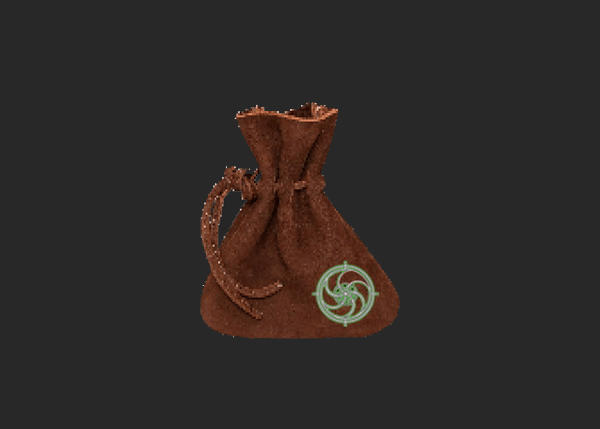

==>

PROMPT:POUCH
BUTTONS PRESSED:BLACK AND WHITE SPIRAL
Description: It is a small bag of some sort that was created by Eri, the inside of the bag is the size of a room. However on the outside it is just a small bag. This is very useful because you can put in many things and the bag doesn't get heavier, or larger.
Danger Level: So far it doesn't show any signs of danger or unpredictibility. However we haven't tested what would happen if the put something living inside the bag. Fairly safe.
==>Go Back